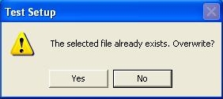

Select the Group menu option.
Select the Group menu option.Choose Select Group to use an existing group.
Choose New Group to create a new group.
For more information on the use of groups see Example: Using Groups.
 From the CAPWIN Main Screen, select the Auto Test
option from the Execute
menu.
From the CAPWIN Main Screen, select the Auto Test
option from the Execute
menu.
An Autotest screen specific to the type of test appears.
Select Type of Test. If the test shown is incorrect, click on Type of Test.

The Test Selection screen appears. Select Pressure Hold from the yellow list.
Click OK. The Autotest screen appears.
Select Output File Name.
If the file shown is incorrect or to create a new file, click on Output File Name.
The Output Data File selector appears.
 The file selector appears as shown if CAPWIN was installed with the default path. If you opted for a different path, locate the Capwin folder and select it. To select an existing file, click on the folder containing the file. Click on the file in the file list. To create a new file, select or create a folder. Type a name for the file in the text box.
The file selector appears as shown if CAPWIN was installed with the default path. If you opted for a different path, locate the Capwin folder and select it. To select an existing file, click on the folder containing the file. Click on the file in the file list. To create a new file, select or create a folder. Type a name for the file in the text box.
Click OK. You are returned to the Autotest screen.
Click OK. You are returned to the Autotest screen.
End User, Test Reference, Sample ID, Lot_Number and Operator are all optional and may be left blank. These items are printed on the reports for information and identification purposes.
Select Gas. If the gas shown is incorrect, click on Gas.
The Gas Select screen appears.
Select a gas. If X: Other Gas is chosen, you are prompted for the Name of Gas and Viscosity (capillary pressure).
Click Done. You are returned to the Autotest screen.
The Gas Select screen appears.
Select a gas. If X: Other Gas is chosen, you are prompted for the Name of Gas and Viscosity (capillary pressure).
Click Done. You are returned to the Autotest screen.
Click the Start Test button at the top of the Autotest screen.
If the data file you have chosen already exists, you will see a screen similar to the one shown at right. Clicking Yes continues the test and overwrites the existing data in the file with the new test data.

Clicking No returns to the Autotest
screen. Follow the instructions from step 5 for selecting an new Output File.
Holding Pressure (differential)is the initial pressure to apply above the sample. Enter the desired value.
Click on Continue.
 Other pressure hold parameters are set by going to the Pressure Hold tab in the Preferences window. There you can set graph appearance, pass/fail options, and data averaging options for the test.
Other pressure hold parameters are set by going to the Pressure Hold tab in the Preferences window. There you can set graph appearance, pass/fail options, and data averaging options for the test.
A message box prompts you to insert the dry
sample. Insert the sample as described below then click OK
to begin the test. (For complete information on installing samples, see the section titled Installing the Sample .) Place the dry sample in the bottom of the sample chamber.
Make sure it completely covers the O ring. If it does not, place one of the adapter plates in the bottom of the chamber, place the sample on the smaller O ring of the adapter, and place the matching adapter plate on top of the sample.
Place the thick spacing insert in the chamber. It should press far enough into the chamber so that the O ring on its side will pass below the upper rim of the chamber, but not so far that the entire insert is below the rim.
Screw the chamber cap onto the chamber and hand-tighten to the point where the O ring on the top of the spacing insert is compressed against the chamber cap.
After installing the sample and clicking on OK, the Current Test Status screen appears. A box appears in the center of the screen prompting you to click OK to start the test. The holding pressure is built up above the sample. Data points are taken as specified. If you haveselected pass/fail options for the test, and the pressure drops below the specified rate, then the test will be registered as a "fail".
Place the thick spacing insert in the chamber. It should press far enough into the chamber so that the O ring on its side will pass below the upper rim of the chamber, but not so far that the entire insert is below the rim.
Screw the chamber cap onto the chamber and hand-tighten to the point where the O ring on the top of the spacing insert is compressed against the chamber cap.
Caution: Over-tightening the cap can cause the cap and spacing insert to seize. If this happens, the sample chamber must be replaced. Over-tightening may also damage the sample
Connect the air hose.After installing the sample and clicking on OK, the Current Test Status screen appears. A box appears in the center of the screen prompting you to click OK to start the test. The holding pressure is built up above the sample. Data points are taken as specified. If you haveselected pass/fail options for the test, and the pressure drops below the specified rate, then the test will be registered as a "fail".
Upon completion of the test, the pressure is released and a message box informs you that the test is complete and that the sample may be removed.
Clicking the OK button returns you to the CAPWIN Main Screen.

Clicking the OK button returns you to the CAPWIN Main Screen.